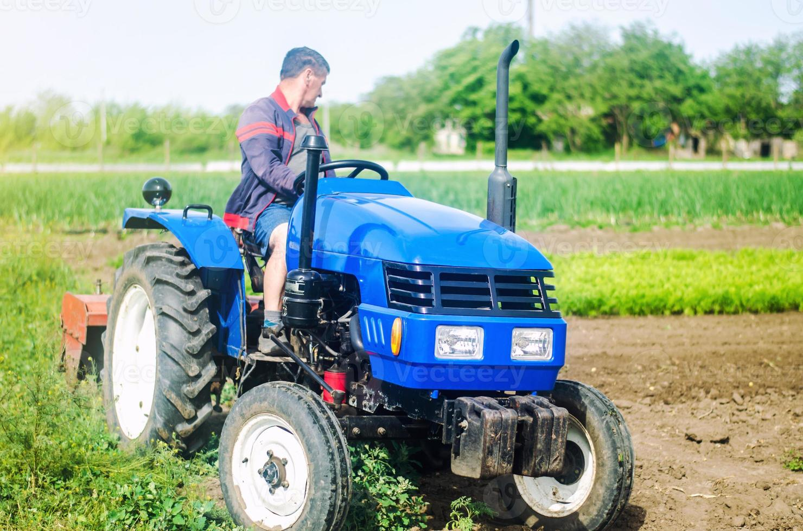
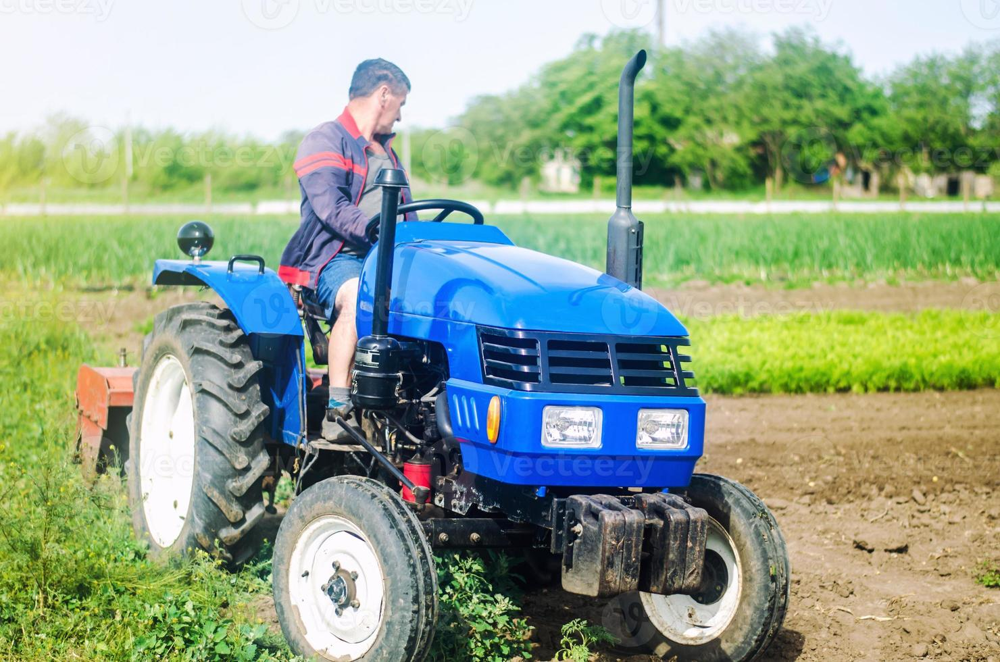

El origen de EcoMercado
EcoMercado nació en el corazón del campo colombiano, de la mano de un grupo de pequeños productores que soñaban con llevar alimentos frescos y naturales directamente a los hogares sin intermediarios. Con el paso del tiempo, la iniciativa se transformó en una comunidad sostenible que apoya la economía rural y promueve el consumo responsable.
Hoy en día, EcoMercado se enorgullece de ser un puente entre quienes cultivan la tierra y quienes valoran los productos que esta nos ofrece. Cada fruta y verdura que llega a tu mesa lleva consigo el esfuerzo, la dedicación y el amor por la naturaleza de cientos de familias campesinas.
üåø Misi√≥n
Proveer alimentos frescos, saludables y sostenibles, conectando directamente a los consumidores con productores locales para fortalecer las economías rurales y promover el respeto por el medio ambiente.
üëÅÔ∏è Visi√≥n
Ser la plataforma líder en Colombia de comercio justo de productos agrícolas, reconocida por su compromiso con la calidad, la sostenibilidad y la innovación en la experiencia del consumidor.
üíö Valores
Transparencia, sostenibilidad, compromiso, trabajo en equipo y amor por la tierra son los pilares que nos guían cada día para ofrecer lo mejor del campo colombiano.

 
